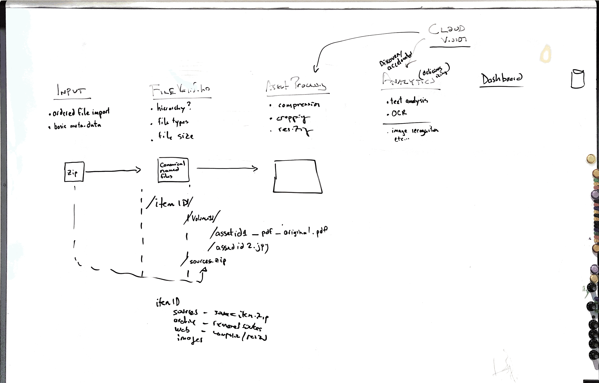
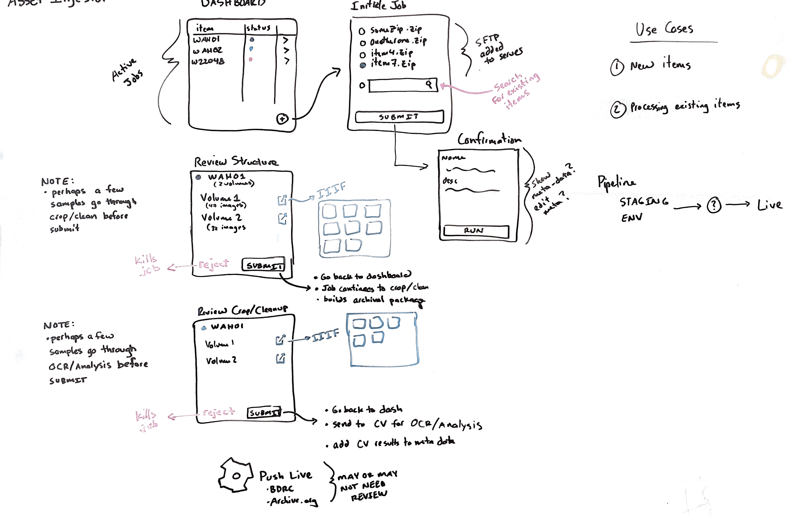
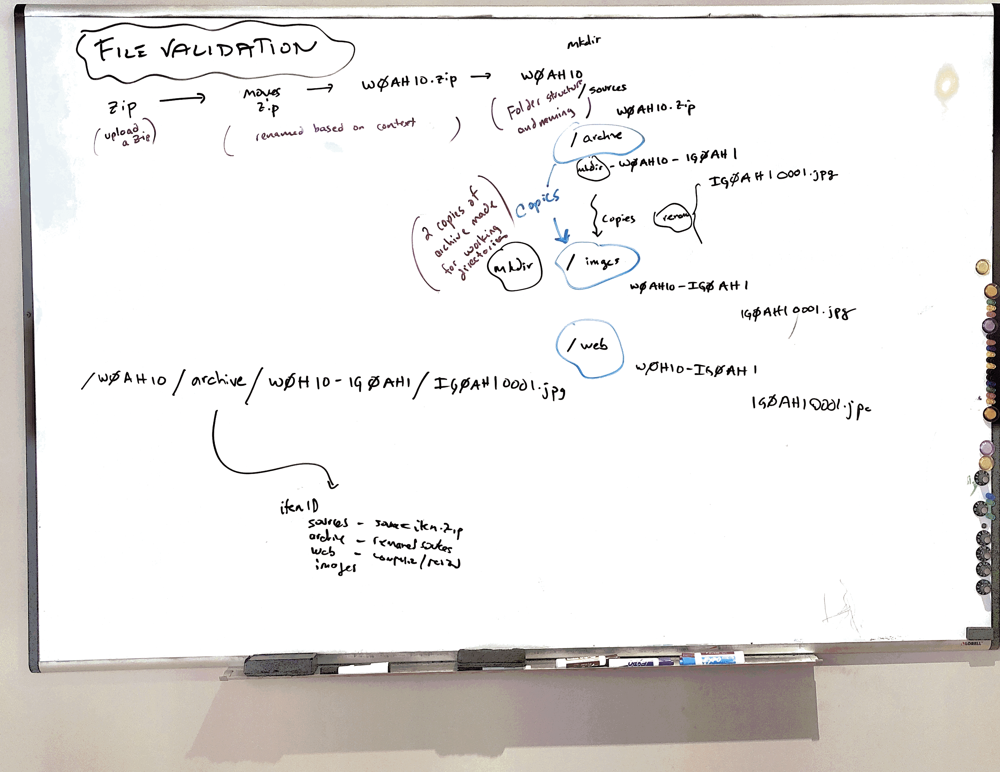
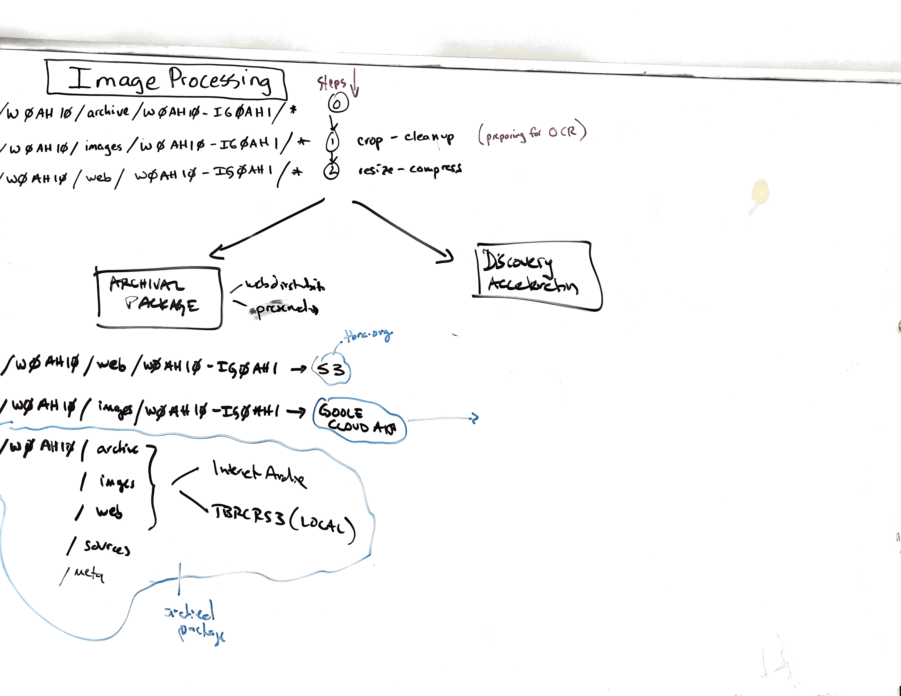
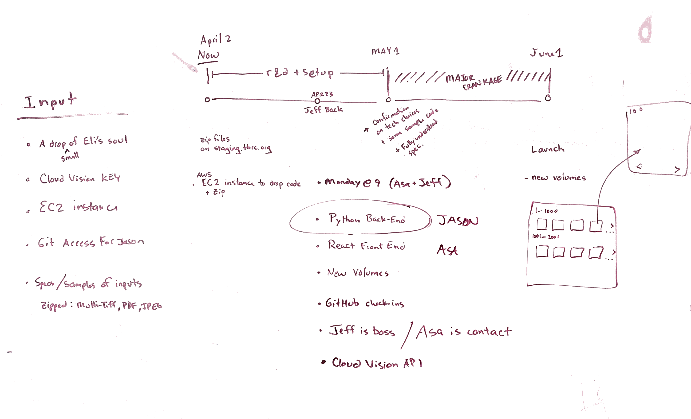

Resources
Source
https://github.com/buda-base/asset-manager
Trello Project Management
These resources are available only to the BDRC Team and selected observers.
if you require access, please request to jimk AT tbrc DOT org
Audit Tool
Asset Manager
Other Images







Other Documents
Core Requirements docs
These documents are maintained in a shared Google Drive Folder, Asset Manager
Asset Manager v.01 Core Requirements
Asset Manager Notes Clearest statement of workflow.